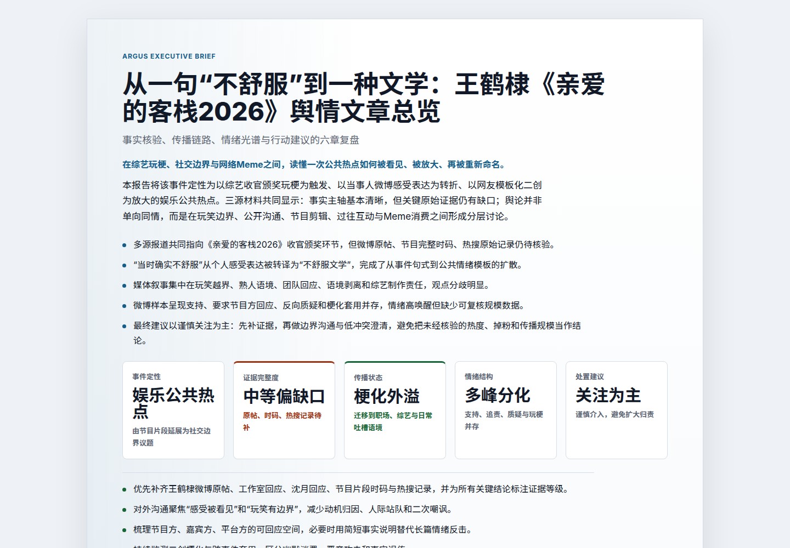

Research plan / 研究计划
A concrete event is framed into subject, issue, timeframe, evidence needs, and review goals.
Argus converts a concrete public event into a research plan, prepares public Weibo evidence, runs a multi-engine chain, and produces reviewable Chinese reports.
Argus 将具体公共事件转化为研究计划，整理公开微博证据，运行多引擎链路，并生成可审阅的中文报告。

The showcase focuses on the product path teams and reviewers can inspect without live credentials: intake, evidence boundary, multi-engine synthesis, and report output.
A concrete event is framed into subject, issue, timeframe, evidence needs, and review goals.
Public Weibo-focused evidence is prepared as bounded samples, not raw crawl dumps.
The chain produces HTML, Markdown, and PDF artifacts for inspection, review, and sharing.
A curated local MP4 shows the Argus workbench flow from event intake to report-ready output.
These sanitized reports demonstrate public-figure and enterprise PR analysis. They are product inspection artifacts, not complete public-opinion datasets.